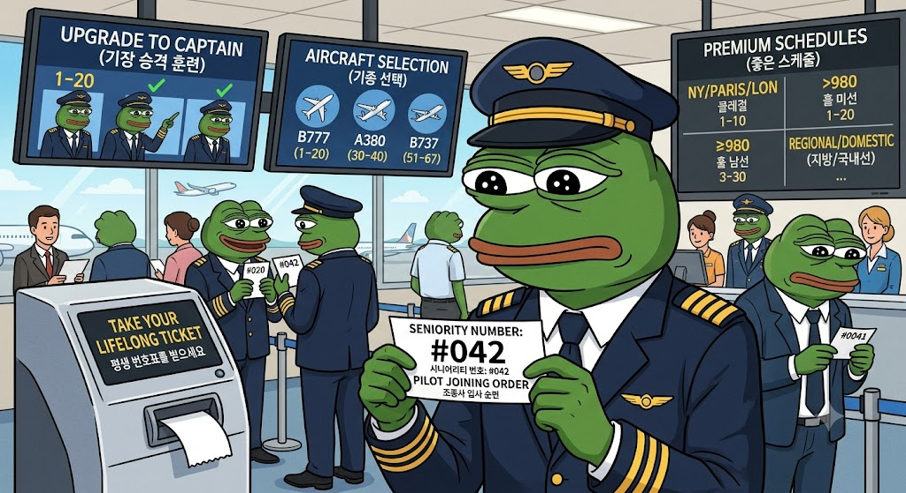
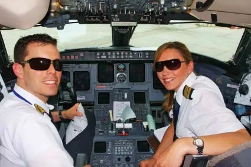
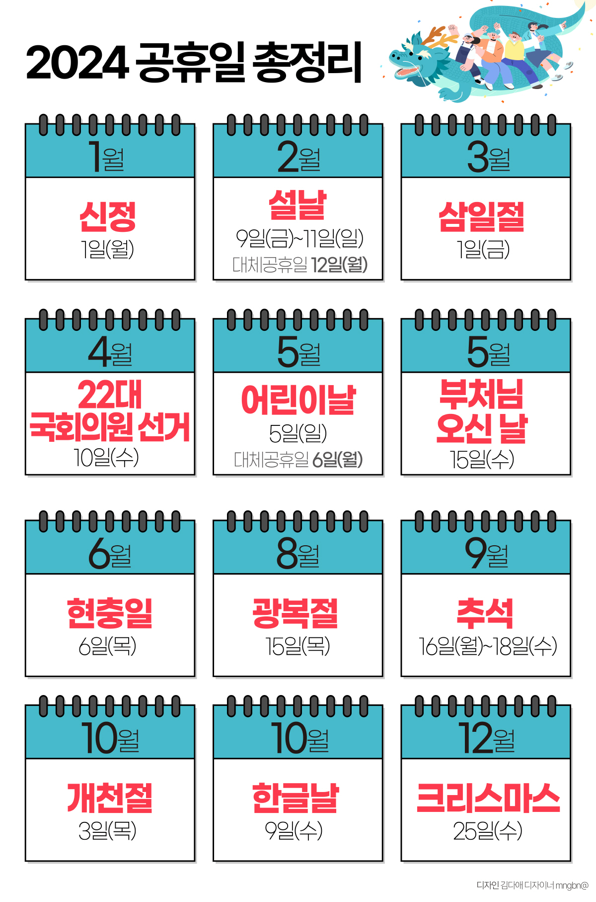
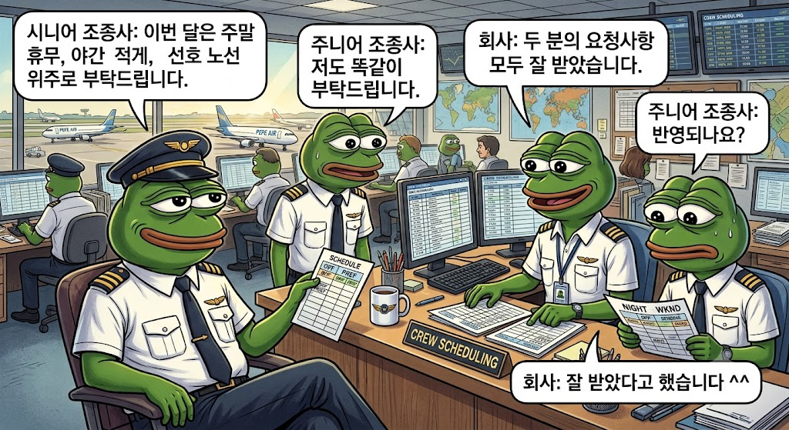
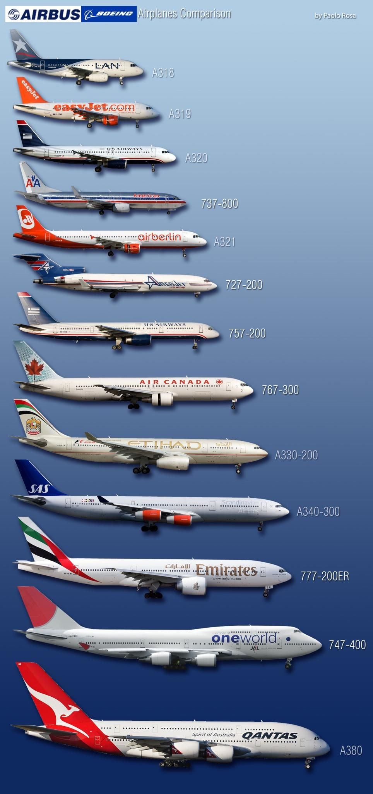
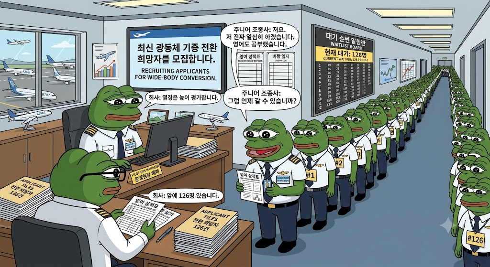
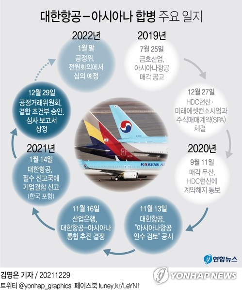
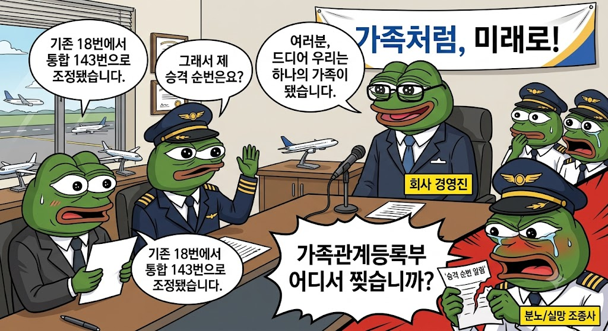
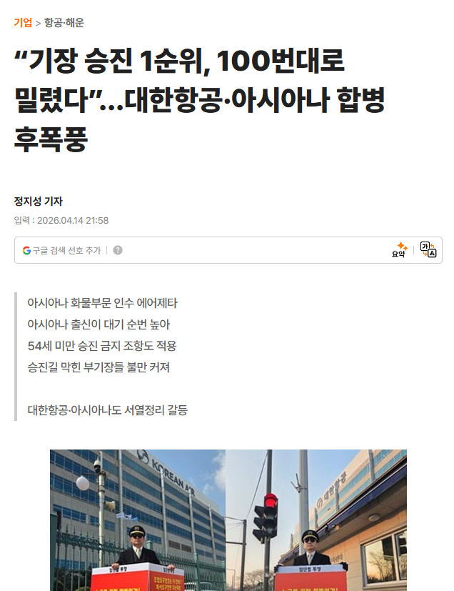
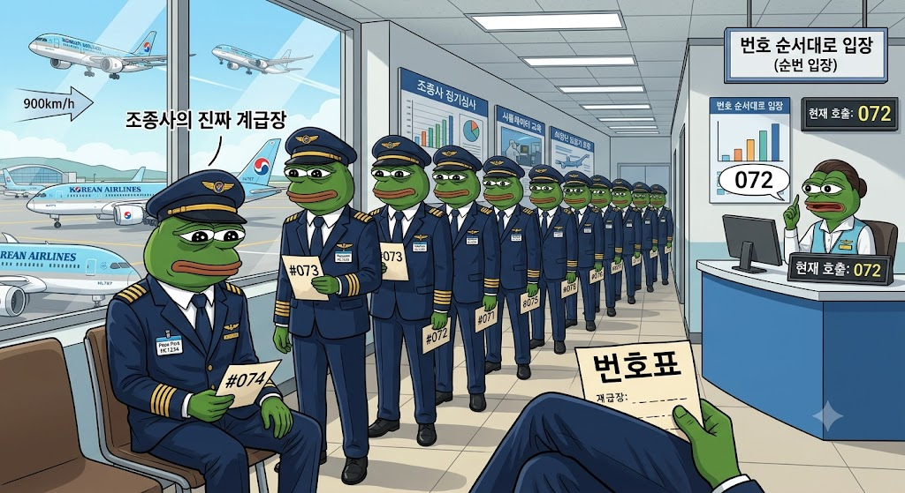

몇몇 사람들은 항공사 조종사 세계를 실력 제일주의로 보곤 함
비행 제일 잘하는 놈이 기장 되고, 그다음으로 잘하는 놈이 부기장 되고,
에이스는 최신형 A350 타고 뉴욕 가고,
약간 부족한 사람은 김포, 제주만 계속 도는 약간 이런식으로 생각함
물론 조종 실력과 자격이 중요한 건 맞음
아무리 회사 짬이 30년이어도 보잉 737 몰다가 갑자기 “나 이제 고참이니까 오늘부터 A350 몰게” 할 수는 없음
기종마다 교육을 다시 받아야 하고, 시뮬레이터에서 엔진 터지고 계기판 먹통 되는 온갖 억까 상황을 견뎌야 하며,
심사 떨어지면 얄짤없이 조종석에서 내려와야 함

그런데 필요한 자격을 갖춘 사람들끼리 누가 먼저 기장 승격훈련을 받고,
누가 좋은 기종과 스케줄을 차지하느냐로 들어가면 이야기가 달라짐
여기서 등장하는 것이 바로 시니어리티, 쉽게 말해 조종사들의 입사 순번임
항공사에 들어가는 순간 각 조종사에게 평생 따라다니는 은행 번호표가 하나 발급된다고 보면 됨

김 부기장과 박 부기장이 있다고 해보자
둘 다 사고 친 적 없고, 비행시간도 충분하고, 기장 승격에 필요한 기본 조건도 갖췄음
그런데 김 부기장이 박 부기장보다 회사에 1년 먼저 들어왔음
마침 회사에서 기장 승격훈련 대상자 다섯 명을 뽑는다면,
다른 조건이 비슷할 경우 김 부기장이 먼저 기회를 받을 가능성이 커짐
박 부기장이 비행을 못해서 밀린 게 아님
그냥 앞에 사람이 아직 많이 서 있는 것임
박 부기장: 저도 이제 기장 조건 다 채웠는데요?
회사: 네, 부기장님 현재 앞에 대기 중인 조종사가 47명 있습니다.
박 부기장: 예상 대기기간은요?
회사: 항공업계 경기에 따라 달라질 수 있습니다.
박 부기장: 그게 몇 년인데요?
회사: ㅋㅋㅋㅋㅋㅋㅋㅋ
이 시니어리티는 뭐 회식 자리에서 누가 상석에 앉느냐 문제가 아님
기장 승격 순서, 기종 전환 기회, 선호 노선, 휴무일, 월간 근무표까지 조종사 인생의 상당 부분을 건드림

조종사는 회사원처럼 매일 아침 9시에 출근해서 저녁 6시에 퇴근하는 직업이 아님
누구는 토요일 낮에 가족과 밥 먹고, 누구는 일요일 새벽 3시에 일어나 인천공항으로 달려감
누구는 장거리 국제선을 타고 며칠간 해외에 머물고, 누구는 하루 동안 국내선과 단거리 국제선을 여러 번 왕복함
그래서 조종사들도 다음 달 스케줄을 짤 때 원하는 휴무일이나 노선, 운항 패턴을 신청함
문제는 모두가 같은 걸 원한다는 것임
사람 마음이 다 똑같아서 “캬 ㅋㅋㅋ이번 달은 명절에 일하고, 매주 주말 출근하고, 야간비행 많이 넣어야지 ㅋㅋㅋ”
라고 신청하는 사람은 없음
다들 주말 쉬고 싶고, 가족 행사 있는 날 쉬고 싶고, 덜 피곤한 스케줄을 받고 싶어 함
그런데 비행기는 매일 떠야 하니 누군가는 주말에 날아가야 하고, 누군가는 새벽에 출근해야 함
이때 자격과 인력 사정, 법정 휴식시간 등을 먼저 따지고,
신청이 겹치면 시니어리티가 중요한 기준으로 작용할 수 있음

시니어 조종사: 이번 달은 주말 휴무, 야간 적게, 선호 노선 위주로 부탁드립니다.
주니어 조종사: 저도 똑같이 부탁드립니다.
회사: 두 분의 요청사항 모두 잘 받았습니다.
주니어 조종사: 반영되나요?
회사: 잘 받았다고 했습니다 ^^
물론 고참이 모든 좋은 스케줄을 독식하고 신입은 무조건 지옥 스케줄만 받는다는 뜻은 아님
회사마다 규정도 다르고, 공정하게 분배하기 위한 장치도 있음
다만 원하는 조건이 서로 겹쳤을 때 앞번호가 상대적으로 유리할 수 있다는 것임
그래서 똑같은 조종사 제복을 입고 있어도 한쪽은 달력을 보며 미리 가족여행을 잡고,
다른 한쪽은 스케줄표가 나온 뒤 가족들에게 다음 달 일정을 통보하고 사과하게 됨

비행기 종류도 마찬가지임
일반인이 보기에는 보잉 737이든 777이든 A321이든 A350이든 전부 날개 달린 큰 버스처럼 보임
하지만 조종사 입장에서는 조종석 구조와 시스템, 비상절차가 다른 별개의 장비임
보잉 737을 몰던 사람이 A350으로 옮기려면 다시 교육받고, 시뮬레이터 타고, 시험 보고, 실제 운항평가까지 받아야 함
자동차 운전면허 있다고 포클레인과 대형 크레인을 바로 몰 수 없는 것과 비슷함
그런데 신형 장거리 기종을 도입했다고 해서 지원한 조종사 전원을 전환교육에 보내줄 수는 없음
새 기종에 필요한 조종사가 30명인데 지원자는 200명이면 결국 누군가는 뽑히고 누군가는 기다려야 함
이때도 회사의 인력 계획과 자격 조건에 더해 시니어리티가 중요한 변수가 될 수 있음

회사: 최신 광동체 기종 전환 희망자를 모집합니다.
주니어 조종사: 저요. 저 진짜 열심히 하겠습니다. 영어도 공부했습니다.
회사: 열정은 높이 평가합니다.
주니어 조종사: 그럼 언제 갈 수 있습니까?
회사: 앞에 126명 있습니다.

정리하면 면허와 실력은 콘텐츠 참가 자격이고, 시니어리티는 입장 순번인 셈임
이 번호표의 곶통이 가장 잘 드러나는 순간이 바로 항공사 합병임
회사 하나 안에서만 서열을 관리할 때는 간단함
1번 다음에 2번, 2번 다음에 3번 세우면 끝임
그런데 항공사 두 곳이 합쳐지면 갑자기 대한항공에도 1번이 있고, 아시아나항공에도 1번이 있는 상태가 됨
둘을 하나의 명단으로 합치려면 누가 누구보다 앞인지 다시 정해야 함
입사일만 놓고 섞을 것인지, 기존 회사별 인원 비율을 인정할 것인지,
현재 기장과 부기장 직급을 어디까지 보장할 것인지, 기존에 몰던 기종은 유지할 것인지,
회사마다 달랐던 채용과 승격 기준은 어떻게 계산할 것인지 전부 문제가 됨
조종사 입장에서는 엑셀 버튼 한 번에 기장 승격이 몇 년 빨라지거나 늦어질 수 있는 문제임

회사: 여러분, 드디어 우리는 하나의 가족이 됐습니다.
조종사: 그래서 제 승격 순번은요?
회사: 기존 18번에서 통합 143번으로 조정됐습니다.
조종사: 가족관계등록부 어디서 찢습니까?

실제로 2026년 대한항공과 아시아나항공의 통합 준비 과정에서도 조종사 시니어리티 문제가 핵심 갈등으로 떠올랐음
양쪽 회사는 조종사 채용 방식과 기장 승격 구조가 달랐기 때문에,
단순히 입사일순으로 한 줄 세운다고 모두가 납득할 수 있는 상황이 아니었음
대한항공 조종사노조 역시 기존 단체협약에 규정된 운항승무원 서열순위제도를 근거로 사전 합의가 필요하다고 말했음
회사 입장에서는 두 회사 직원들을 공정하게 통합하겠다..고 말하면 그만이지만,
조종사 개인에게는 자기 인생 대기번호가 실시간으로 변하는거임
비슷한 문제는 아시아나항공 화물사업부 인력이 에어제타로 이동하는 과정에서도 불거졌음
보도에 따르면 아시아나 출신 조종사 약 225명이 이동해 기존 인력과 서열을 합치는 과정에서,
원래 기장 승격 대기순번 1번이었던 기존 부기장이 순식간에 100번대 뒤로 밀리는 상황까지 나왔음
이쯤 되면 “그럼 조종사도 결국 실력보다 짬밥이냐?”라는 생각이 들 수 있음
그건 또 아님
시니어리티가 높다고 자동으로 기장이 되는 것은 절대 아님
필요한 면허와 경력을 갖춰야 하고, 회사의 승격훈련과 시뮬레이터 심사, 실제 운항평가를 통과해야 함
현직 기장이 된 뒤에도 계속 정기심사를 받음
선배라고 시험 답안지에 이름만 쓰고 합격하는건 아님
시뮬레이터에서 엔진이 꺼지고, 활주로에 문제가 생기고, 기상이 나빠지는 상황에서
제대로 대응하지 못하면 아무리 앞번호라도 승격하지 못함
정확히 표현하면
실력과 자격은 기회를 받을 수 있느냐를 결정하고, 시니어리티는 그 기회를 언제 받느냐를 결정함
오히려 시니어리티 제도는 회사가 마음에 드는 사람에게만
좋은 노선과 승격기회를 몰아주는 일을 막기 위해 만들어진 측면도 있음
회사 간부와 친한 사람은 최신 기종으로 보내고,
눈 밖에 난 사람은 영원히 뒤에 세우는 식으로 인사를 하면
조종사 인생이 상사의 기분에 따라 결정됨
그래서 일정한 순번을 만들어 “적어도 자격이 같으면 앞사람부터 기회를 준다”는 가능성을 보장하는 것임
하지만 이 제도에도 치명적인 약점이 있음
회사가 성장하지 않으면 줄이 안 줄어듦
새 비행기를 들이고 노선을 늘려야 새로운 기장 자리와 기종 전환 자리가 생기는데,
회사가 불황이라 비행기를 줄이고 채용과 승격을 멈추면 뒤쪽 번호는 그냥 세월을 맞으며 기다려야 함
항공사가 잘나갈 때는
“캬 ㅋㅋㅋ 신규 항공기 20대 도입! 국제선 대폭 확대! 기장 승격훈련 추가 실시!”
조종사들에게는 행복한 이벤트
반대로 항공사가 어려워지면
“앞번호 고객님의 업무가 아직 종료되지 않았음 현재 대기시간은 알 수 없음 ㅋㅋ ㅈㅅ ”
그래서 조종사에게 우리 회사가 비행기를 수십 대 주문했다는 기사가 훨씬 반가울수도 있음
비행기가 늘어나야 조종석 자리도 늘어나고,
앞번호 사람들이 기장으로 올라가야 뒤번호 사람들도 한 칸씩 움직이기 때문임

한국 항공사 조종사의 세계는 최첨단 항공기, 수많은 면허, 시뮬레이터, 정기심사로 이루어져있음
그런데 그 엘리트 집단의 인생을 의외로 강하게 지배하는 것은 매우 원시적인 물건임
번호표
하늘에서는 시속 900km로 날아다니지만, 회사 안에서는 앞사람이 빠져야 한 칸 움직이는 세계
어쩌면 이게 항공사 조종사의 진짜 계급장인 셈 아닐까?
그냥 군대 TO 짬순이네